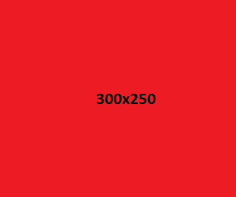

The zoom level can affect device pixel ratio. If you notice the device pixel ratio isn't what you expect check
if you're zoomed in.
Questions
How does rounding work for device pixel ratio and width descriptors with srcset?
Does it round up to the nearest matching image ensure we never have an image too low resolution?
Why are the images below different rendered widths when the same image is picked? I.e. sometimes the picked
image is the 1500x250, but its rendered with is 600x250. This is when no width information is provided on HTML
attributes or in the CSS, so why is it not the natural image size?
Examples
Simple image with src attribute

<img alt="A test responsive image"
src="fallback.png" />
This is just a standard image with a src attribute. It will load exactly the image specified in
src and never any other.
The pixel density descriptor of srcset lets you tell the browser what image should be used
depending on the device pixel ratio. If there are 1x, 2x or 3x device pixels to CSS pixels then the corresponding
image will be chosen.
You can see the device pixel ratio in the information in the bottom right of the screen under devicePixelRatio.
Note that the actual number width of the device or window does not affect the calculation, only the device pixel
ratio.
Here srcset is used to define at images at different sizes. The format is:
<image-url> <width descriptor>. Width descriptor describes the pixel width of the source
image.
Without sizes
Some resources online say that when srcset is used without sizes, it is assumed the
image should fill the entire browser width. But according to the specification it is invalid to use
srcset with width descriptors without a sizes attribute:
If the srcset attribute is present and has any image candidate strings using a width
descriptor, the sizes attribute must also be present
Pixel density
Note that even when using width descriptors with srcset, the browser will try and take pixel density
into account. It will do this by selecting an image size according to device pixels rather than CSS pixels. You
can see this value in the info section as devicePixelRatio * outerWidth.
When using the sizes attributes you are able to specify conditions about when each image should be
used.
Match order
The statements in sizes are read first to last, and the first matching one will one. This means order
is important depending on how you write your media conditions.
Fallback
The final entry in sizes doesn't have a condition, it's just a source size value. It is a fallback
and is used if none of the media conditions match.
CSS pixels, device pixels and pixel density
An important thing to note is the sizes media conditions use CSS pixels, but the actual image size
chosen from srcset will be chosen taking the pixel density of the device into account.
Worked example
Above is an example image using srcset and sizes. Described here are the steps taken
by the browser to work out the final image to display, in this example for an iPhone 11.
Work out the entry from sizes that matches:
The width of an iPhone 11 in CSS pixels is 414.
Going down the sizes list from the top, the first condition to match is
min-width: 300px.
This has a source size value (the right-hand size) of
300px which is the desired width
of the image in CSS pixels.
Work out that entry from srcset that matches:
First work out what the desired image size in device pixels. We do this by multiplying the source
size value we just worked out by the device's pixel density, which for iPhone 11 is 2. In this case
that's:
300px (CSS pixels) * 2 (pixel density) =
600px (device pixels)
The srcset attribute is then consulted to find the closest matching image. In this case
there is a width descriptor of 600w which matches 600px
exactly. This results in the corresponding 600x250.png image being
chosen.
window.innerWidth
devicePixelRatio * innerWidth
window.devicePixelRatio
window.outerWidth
devicePixelRatio * outerWidth
Results
Here is a recording of the images that were loaded for various device, browser and window sizes combinations
for the examples above.
Notes
Windows + Chrome appears to change the selected image for the pixel density srcset example when the
window size changes, even though the pixel density remains the same. This isn't what I'd expect and doesn't
seem to match the intention of pixel density descriptors.
The moto e(7i) power reports a innerWidth larger than outerWidth. This essentially
appears to be an Android bug on mobile.